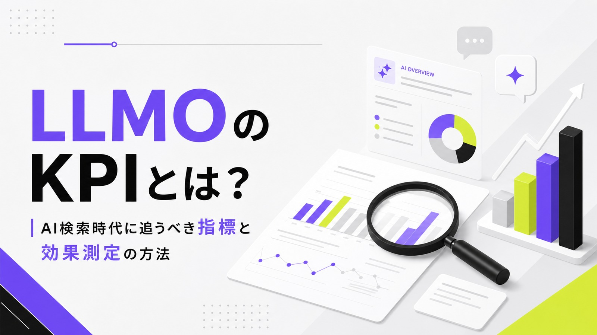
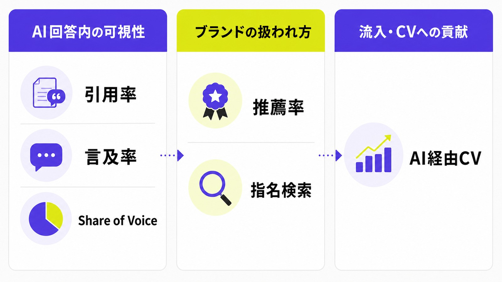
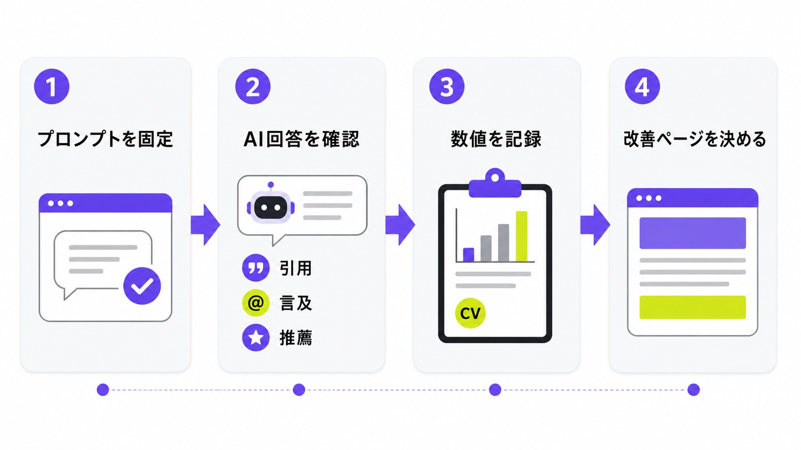
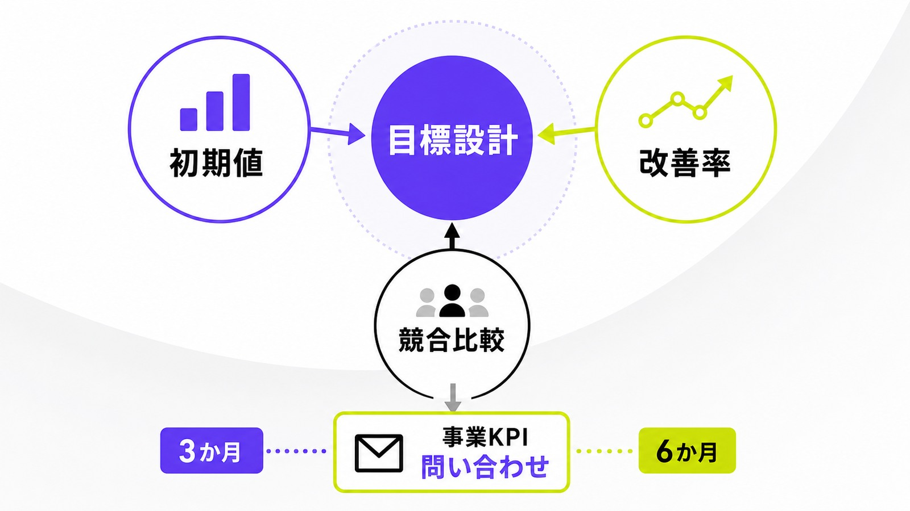
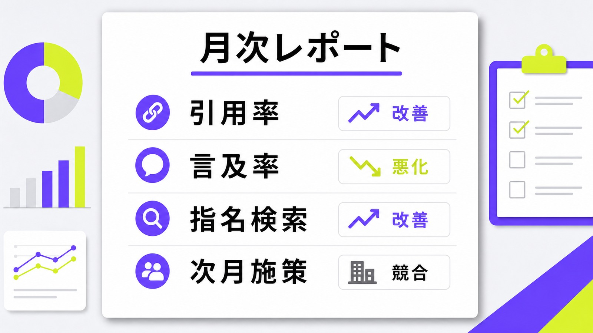

LLMOのKPIとは？AI検索時代に追うべき指標と効果測定の方法

LLMOの成果は、検索順位や自然検索流入だけでは見えにくくなっています。LLMO対策を進めるなら、AI回答内で自社がどう扱われているかまで見ないと判断を間違えやすくなります。
この記事では、引用率、ブランド言及率、Share of Voice、AI経由CV、指名検索など、AI検索時代に追うべきKPIと効果測定の方法を整理します。投資対効果まで見たい場合は、AI検索のROIもあわせて確認してください。
先に結論
- LLMOのKPIは、AIに見つけられ、引用・言及・推薦されているかを見る指標です。
- AI検索ではクリック前に比較検討が進むため、流入数だけでは成果を判断できません。
- まずは引用率、ブランド言及率、Share of Voice、AI経由流入数、指名検索数から追うと始めやすいです。
目次

LLMOのKPIとは
LLMOのKPIとは、ChatGPT、Gemini、Perplexity、Google AI OverviewsなどのAI回答において、自社や自社コンテンツがどのように扱われているかを測る指標です。
従来のSEOでは、検索順位、クリック数、CTR、自然検索流入、CV数などが主な評価対象でした。しかしAI検索では、ユーザーが検索結果ページをクリックする前に、AI回答だけで情報収集や比較検討を終えるケースがあります。
そのためLLMOでは、「どれだけ流入したか」だけでなく、「AI回答内で引用されたか」「ブランド名が言及されたか」「競合と比べて推薦されているか」まで含めて成果を測る必要があります。
LLMOのKPIは「AIに選ばれているか」を測る指標
LLMOのKPIは、自社サイトがAIにどれだけ見つけられ、理解され、回答内で採用されているかを確認するための指標です。検索順位のように1位、2位と単純に並ぶものではなく、AI回答の中でどの文脈で扱われたかまで見る必要があります。
たとえば、自社の記事が出典として引用される場合もあれば、URLは出ないもののブランド名だけが候補として挙がる場合もあります。さらに、「おすすめ」「比較すべき会社」「導入候補」として紹介される場合は、単なる露出よりも事業成果に近い接点になります。
つまりLLMOのKPIは、AI検索上の可視性を測るものです。AI回答内で自社が選ばれているか、正しく説明されているか、競合より優先的に扱われているかを追うことで、AI検索時代の集客力を判断できます。
SEOのKPIとLLMOのKPIの違い
SEOのKPIは、検索順位、表示回数、クリック数、CTR、自然検索流入、CV数などが中心です。一方、LLMOではクリック前の接触も重要になります。AI回答に自社名が出たものの、ユーザーがサイトを訪問せずに理解を終える場合、GA4やSearch Consoleだけでは成果を十分に把握できません。
LLMOをSEOと切り離さずに考える根拠として、次の記述があります。
「SEO のベスト プラクティスは、引き続き Google 検索の AI 機能でも有効です。」
つまり、LLMOはSEOを否定するものではありません。従来のSEOで重要だったクロール、インデックス、コンテンツ品質、ユーザーに役立つ情報設計を土台にしながら、AI回答内での引用・言及・推薦まで成果指標に加える考え方です。
LLMOでKPI設計が重要になる理由
LLMOでは、記事を増やしただけ、構造化データを入れただけ、llms.txtを設置しただけでは成果を判断できません。大事なのは、それらの施策によってAI回答内での扱われ方がどう変わったかです。
AI検索では、ユーザーが「おすすめの会社」「比較すべきサービス」「導入時の注意点」など、より意思決定に近い質問をします。その回答に自社が登場するかどうかは、認知・比較検討・問い合わせに影響します。
だからこそ、LLMOのKPIは施策量ではなく、AI回答上の可視性と事業成果をつなぐ形で設計する必要があります。
AI回答はクリックなしで意思決定に影響する
AI検索では、ユーザーが複数のサイトを開かなくても、AI回答だけで概要、比較、候補、判断材料を得られます。これは便利な一方で、企業側から見ると、サイト流入として記録されない接点が増えるということです。
クリック前の可視性を見る必要性は、CTR低下の調査からも読み取れます。
「検索 1 位のページの平均クリック率は 58% 低下する」
もちろん、すべての業界やクエリで同じ影響が出るわけではありません。ただし、AI回答が検索体験の上部で情報を要約する以上、クリック数だけで成果を判断するのは不十分です。LLMOでは、サイトに来る前の露出や比較検討への影響までKPIに含める必要があります。
流入数だけを見るとLLMOの成果を見落とす
GA4では、ユーザーやセッション、イベント単位で流入元を分析できます。ChatGPTやPerplexityなどからサイトへ訪問があった場合、参照元やセッションの流入元として把握できるケースがあります。しかし、AI回答内で自社名や記事内容が表示されただけでは、GA4上の流入としては記録されません。
ユーザーがAI回答を読んで後日指名検索した場合も、最初の接点はAIだったとしても、計測上はGoogle検索や直接流入に見える可能性があります。つまり、AI検索の影響はアクセス解析だけでは抜け落ちやすい構造になっています。
そのため、LLMOのKPIは「AI経由流入数」だけでは不十分です。AI回答内の引用率、ブランド言及率、指名検索数、問い合わせ時の認知経路などを組み合わせて、AI検索がどの段階に効いているのかを見る必要があります。
AI検索では引用・言及・推薦を分けて見る
LLMOの成果を見るときは、「引用」「言及」「推薦」を分けて考える必要があります。引用は、自社サイトや記事URLがAI回答の出典として扱われる状態です。言及は、URLが出なくても会社名やサービス名が回答内に出る状態です。
推薦はさらに一歩進みます。「おすすめの会社」「比較すべきサービス」「導入候補」などの回答で、自社が候補として挙がる状態です。単なる言及よりも、問い合わせや商談に近い接点といえます。
この3つを分けずに「AIに出たかどうか」だけで判断すると、成果の質が見えません。認知目的なら言及率、コンテンツ評価なら引用率、リード獲得なら推薦率を重視するなど、目的に応じて見るべきKPIを変えることが重要です。
LLMOで追うべき主要KPI
LLMOで追うべきKPIは、大きく「AI回答内の可視性」「ブランドの扱われ方」「サイト流入・CVへの貢献」に分けられます。
最初からすべてを細かく追う必要はありません。まずは、引用率、ブランド言及率、Share of Voice、AI経由流入数、指名検索数の5つから始めると、運用しやすくなります。
そのうえで、問い合わせ数や商談数とつながるプロンプトを増やし、推薦率やAI経由CVまで見ていくと、LLMOを事業KPIに接続しやすくなります。

AI回答内の引用率
AI回答内の引用率は、自社サイトや自社記事がAI回答の出典として引用された割合です。LLMOの中でも、もっとも基本になるKPIです。対象プロンプトを決め、何回の計測のうち何回自社サイトが引用されたかを確認します。
たとえば、「LLMO KPIとは」「AI検索対策 方法」「生成AI マーケティング 事例」などのプロンプトを用意し、ChatGPT、Gemini、Perplexity、Google AI Overviewsなどで回答を確認します。その中で自社サイトが引用されていれば、引用ありとして記録します。
計算式は「自社サイトが引用された回答数 ÷ 計測したプロンプト数 × 100」です。引用率が上がっている場合、自社コンテンツがAIにとって参照しやすい情報源になっている可能性があります。
ブランド言及率
ブランド言及率は、AI回答内で自社名、サービス名、商品名が言及された割合です。URLが引用されていなくても、ブランド名が回答内に出ていれば、認知や比較検討に影響している可能性があります。
たとえば、「LLMO支援会社」「AI検索対策に強い会社」「中小企業向けのAIマーケティング支援」などのプロンプトで、自社名が候補として表示されるかを見ます。BtoB、士業、SaaS、製造業など、比較検討期間が長い業界では特に重要です。
計算式は「自社名が出た回答数 ÷ 計測したプロンプト数 × 100」です。ブランド言及率が高まるほど、AIがその領域の候補として自社を認識している状態に近づきます。
Share of Voice
Share of Voiceは、AI回答内で自社が競合と比べてどれだけ登場しているかを見るKPIです。自社単体の言及回数だけでは、実際に勝っているのか負けているのかが分かりません。競合と並べて見ることで、AI検索上の市場内ポジションが見えます。
計算式は「自社の言及回数 ÷ 自社と競合の総言及回数 × 100」です。競合3〜5社を固定して毎月計測すると、自社のAI検索上の存在感が伸びているかを判断しやすくなります。
Share of Voiceを見ると、次に強化すべきプロンプトも見つかります。競合だけが出ている質問、自社は出るが説明が浅い質問、自社サイトではなく外部サイトだけが引用されている質問を分ければ、改善すべきページや情報設計が明確になります。
推薦率
推薦率は、「おすすめ」「比較」「導入候補」などのプロンプトで、自社が候補として紹介された割合です。LLMOのKPIの中でも、問い合わせや商談に近い指標です。
たとえば、「LLMO支援会社のおすすめは？」「BtoB企業が相談すべきAI検索対策会社は？」「中小企業に向いているLLMOサービスは？」といったプロンプトで、自社が表示されるかを見ます。単なる用語解説プロンプトよりも、購買意欲が高いユーザーに近い接点です。
計算式は「自社が推薦された回答数 ÷ 推薦系プロンプトの計測数 × 100」です。推薦率が高いほど、AIが自社を選択肢として提示している状態といえます。
推薦順位
推薦順位は、AI回答内で自社が何番目に紹介されたかを見るKPIです。検索順位のように固定された順位ではありませんが、同じプロンプトを複数回、複数AIで計測すれば、おおよその扱われ方を把握できます。
たとえば、5社が紹介される回答で自社が1番目に出る場合と、最後に補足的に出る場合では、ユーザーに与える印象が変わります。特に「おすすめ」「比較」「導入候補」のプロンプトでは、紹介順が検討リストへの入りやすさに影響します。
推薦順位は単体ではなく、推薦率や記述内容の正確性とあわせて見ます。上位に出ていても説明が間違っていれば改善が必要ですし、下位でも正確に説明されているなら、次は比較軸や実績情報の強化が有効です。
記述内容の正確性
記述内容の正確性は、AIが自社について正しく説明しているかを見るKPIです。社名、サービス内容、料金、対象顧客、強み、実績、対応範囲などが誤っている場合、露出が増えても成果にはつながりにくくなります。
たとえば、自社がBtoB向けのLLMO支援をしているのに、AI回答で「SEO記事制作会社」とだけ説明されている場合、情報が浅い状態です。料金体系やサービス範囲が古い情報で表示される場合も、改善が必要です。
スコア化するなら、5点は「正確で強みまで反映されている」、3点は「大枠は合っているが情報が浅い」、1点は「誤情報や競合との混同がある」とします。LLMOでは、出ることだけでなく、どう説明されるかまで見る必要があります。
センチメント
センチメントは、AI回答内で自社が肯定的・中立的・否定的のどの文脈で扱われているかを見るKPIです。単に登場回数が増えても、「情報が少ない」「料金が分かりにくい」「実績が不明」といった文脈で出ているなら、改善対象になります。
たとえば、競合比較の回答で「A社は実績が豊富、B社は料金が明確、自社は情報が限定的」と書かれている場合、自社は言及されていても評価は弱い状態です。この場合、実績、料金、対象顧客、支援範囲を明確にする必要があります。
センチメントは数値化しにくい指標ですが、月次で記録すると変化を追えます。ポジティブな文脈が増えているのか、中立的な説明にとどまっているのか、誤解や不安材料が残っているのかを見て、改善方針を決めます。
AI経由流入数
AI経由流入数は、ChatGPT、Perplexity、GeminiなどのAIサービスからサイトへ訪問したセッション数です。GA4の流入元や参照元を確認することで、AIツール経由のアクセスを把握できる場合があります。
ただし、AI経由流入数はLLMO成果の一部にすぎません。AI回答内で自社が紹介されても、ユーザーがその場でクリックしなければGA4には記録されません。また、後から社名で検索して訪問した場合、AIが最初の接点だったことは見えにくくなります。
そのため、AI経由流入数は単独で評価せず、ブランド言及率、指名検索数、問い合わせ時の認知経路とあわせて見ます。AI経由流入が少なくても、指名検索や問い合わせが増えているなら、LLMOが間接的に効いている可能性があります。
AI経由CV数
AI経由CV数は、AIサービスから訪問したユーザーが、問い合わせ、資料請求、予約、購入などに至った数です。LLMOを事業成果に接続するうえで、重要なKPIになります。
AI経由の流入は、一般的な自然検索流入より少なく見える場合があります。しかし、AI回答で事前に比較や理解が進んでいるユーザーは、訪問後のCVRが高くなる可能性があります。流入数だけではなく、CVRや商談化率まで見ることが大切です。
計測する場合は、GA4でキーイベントを設定し、AI経由のセッションとCVを確認します。問い合わせフォームには「何を見て知りましたか」という項目を追加すると、AI回答経由の間接効果も拾いやすくなります。
指名検索数
指名検索数は、会社名、サービス名、代表者名、ブランド名などで検索された回数です。AI回答内で自社を知ったユーザーが、後からGoogleで検索するケースがあるため、LLMOの間接効果を見るうえで重要です。
Search Consoleで確認できる検索パフォーマンスの基本指標には、次のものがあります。
「表示回数」「クリック数」「（平均）掲載順位」「クリック率」
LLMO施策の前後で指名検索が増えている場合、AI回答や外部露出によってブランド認知が高まっている可能性があります。特にBtoBでは、AI回答で候補を知り、後から社名検索して問い合わせる流れが起こりやすいため、必ず見たいKPIです。
目的別に見るLLMOのKPI設計
LLMOのKPIは、目的によって優先順位が変わります。認知拡大を狙う場合と、問い合わせ獲得を狙う場合では、追うべき指標は同じではありません。
最初に「何のためにLLMOを行うのか」を決め、その目的に合うKPIを選ぶことが重要です。目的が曖昧なまま指標を増やすと、毎月のレポートは作れても、施策判断につながりません。
ここでは、認知拡大、リード獲得、誤情報対策、SEO補完の4つに分けて、見るべきKPIを解説します。
認知拡大を目的にする場合
認知拡大を目的にする場合は、ブランド言及率、AI回答内の露出回数、Share of Voice、指名検索数を重視します。まだ問い合わせに直結しなくても、AI回答内で自社が候補として出ているかを見ることが大切です。
たとえば、新しいサービスカテゴリを立ち上げた段階では、いきなりCV数だけを追っても成果は見えにくいです。まずは「その領域の代表的な会社」としてAIに認識されているか、競合と並んで言及されているかを確認します。
この段階では、引用率よりもブランド言及率やShare of Voiceが重要です。AI回答に出る回数が増え、指名検索が増えてきたら、認知形成が進んでいる可能性があります。
リード獲得を目的にする場合
リード獲得を目的にする場合は、推薦率、AI経由流入数、AI経由CV数、問い合わせ数、商談化率を重視します。単にAI回答に出るだけでなく、比較検討や導入判断に近い文脈で表示されているかを見る必要があります。
たとえば、「おすすめのLLMO支援会社」「BtoB企業向けのAI検索対策会社」「SaaS企業に強いLLMO会社」などのプロンプトで自社が候補に入っているかを計測します。ここで表示される場合、ユーザーの購買意欲に近い接点を取れている可能性があります。
さらに、AI経由の訪問が問い合わせや資料請求につながっているかも確認します。流入数が少なくても、CVRや商談化率が高ければ、LLMOは質の高いリード獲得チャネルになり得ます。
誤情報対策を目的にする場合
誤情報対策を目的にする場合は、記述内容の正確性、センチメント、古い情報の残存率、競合との混同率を見ます。AI回答に自社が出ていても、内容が間違っていれば、成果ではなくリスクになります。
たとえば、すでに終了したサービスが表示される、古い料金が出る、対象外の業界に強いと説明される、競合サービスと混同されるといった状態は改善が必要です。特に医療、士業、金融、BtoBサービスでは、情報の正確性が信頼に直結します。
この場合、KPIは「何回出たか」よりも「正しく出ているか」を優先します。会社概要、サービスページ、FAQ、事例、外部プロフィールなどを整え、AIが参照しやすい正確な情報源を増やすことが重要です。
SEOの補完を目的にする場合
SEOの補完としてLLMOに取り組む場合は、AI回答内引用率、自然検索CTR、自然検索流入、指名検索数、AI経由流入数をあわせて見ます。従来SEOとLLMOは完全に別物ではなく、検索上での見つかりやすさを高める点でつながっています。
検索エンジンに見つけられ、理解され、ユーザーに役立つ情報として評価されることは、AI検索でも土台になります。そのため、クロール可能なサイト構造、分かりやすい内部リンク、ユーザーの疑問に答える本文、ページ上の情報と一致した構造化データなどは引き続き重要です。
ただし、LLMOでは通常のSEO記事だけでは不十分です。AIが回答に使いやすいように、定義、比較表、手順、事例、FAQ、独自データなどをページ内に明確に置く必要があります。
LLMO KPIの計測方法
LLMOの計測は、最初から高額なツールを使わなくても始められます。まずは、重要プロンプトを決め、手動でAI回答を確認し、スプレッドシートに記録するだけでも十分です。
大事なのは、毎回違う質問を思いつきで試すのではなく、同じプロンプト群を定点観測することです。定点で見なければ、改善したのか、たまたま出ただけなのかを判断できません。
そのうえで、Search Console、GA4、AI可視化ツールを組み合わせると、AI回答内の露出から流入・CVまで追いやすくなります。

プロンプトセットを作って定点観測する
LLMOの計測では、まず対象プロンプトを作ります。プロンプトは、認知、課題認識、比較検討、購入直前の段階に分けて用意すると、どのフェーズで自社が弱いのかが分かります。
たとえば、認知段階なら「LLMOとは」、課題認識なら「AI検索対策で何をすべきか」、比較検討なら「LLMO支援会社の選び方」、購入直前なら「おすすめのLLMO支援会社」といった形です。
それぞれのプロンプトに対して、自社の言及有無、引用有無、競合の表示状況、推薦順位、回答内容の正確性を記録します。月1回、同じ条件で計測すれば、施策前後の変化を把握しやすくなります。
Search Consoleで指名検索と検索パフォーマンスを見る
Search Consoleでは、検索クエリごとのクリック数、表示回数、平均CTR、平均掲載順位を確認できます。LLMOの直接計測ツールではありませんが、AI回答で認知された後の指名検索や検索行動の変化を見るうえで役立ちます。
特に見るべきなのは、会社名、サービス名、代表者名、ブランド名を含むクエリです。LLMO施策の開始後にこれらの表示回数やクリック数が増えていれば、AI回答や外部露出によってブランド想起が強まっている可能性があります。
また、LLMOで強化したページの検索パフォーマンスも見ます。AIに引用されやすいページは、検索でも評価される情報設計になっている場合があります。AI回答内の引用率と検索パフォーマンスを並べて見ることで、改善の方向性が見えます。
GA4でAI経由流入とCVを見る
GA4では、流入元やセッション単位のデータを確認できます。ChatGPT、Perplexity、Geminiなどからの訪問が発生している場合、AI経由流入として確認できるケースがあります。さらに、問い合わせや資料請求などのキーイベントと接続すれば、CV貢献も見られます。
ただし、GA4だけではAI回答内の非クリック接触は把握できません。ユーザーがAI回答で自社を知り、後から社名検索で訪問した場合、最初の接点はAIでも、計測上はGoogle検索やDirectに見える可能性があります。
そのため、GA4は「AIから実際に来た流入」を見るための指標として使います。LLMO全体の成果を見るには、AI回答内の引用率やブランド言及率、Search Consoleの指名検索数とあわせて判断する必要があります。
AI可視化ツールで競合比較する
本格的にLLMOを運用する場合は、AI回答内の引用、言及、Share of Voice、センチメントを追えるツールを使うと効率的です。手動計測でも始められますが、プロンプト数や競合数が増えると、確認作業に時間がかかります。
ツールを使えば、ChatGPT、Gemini、Google検索、Perplexityなど複数のAI検索環境で、自社や競合がどのように表示されているかを確認しやすくなります。特に、競合だけが表示されているプロンプトを見つけると、コンテンツ改善の優先順位が決めやすくなります。
ただし、ツールを導入しても、見るべきKPIが曖昧なままでは施策に落ちません。どのプロンプトで負けているのか、どの競合が引用されているのか、どのページを強化すべきかまで見る必要があります。
LLMO KPIを改善するための施策
LLMOのKPIを改善するには、AIが引用・言及・推薦しやすい情報を増やす必要があります。抽象的な記事を増やすだけでは、AI回答の材料として弱くなります。
特に重要なのは、一次情報、比較情報、事例、FAQ、料金、対象顧客、導入手順などです。AIが回答を作るときに使いやすい具体情報を、自社サイト内に明確に置くことが欠かせません。
また、自社サイトだけでなく、外部メディア、口コミ、プロフィール、登壇情報、導入事例なども含めて、ブランド情報の一貫性を高める必要があります。
AIに引用されやすい一次情報を増やす
AIに引用されやすいページを作るには、一般論だけでなく、自社独自の情報を入れる必要があります。独自調査、事例、数値、比較表、導入ステップ、FAQ、チェックリストなどは、AIが回答の根拠として使いやすい情報です。
たとえば、「LLMOとは」という一般的な解説だけでは、他社記事との差が出にくくなります。一方で、「業界別のLLMO KPI」「実際のAI回答計測シート」「引用率改善の事例」などがあると、AI回答内で参照される理由が生まれます。
LLMOでは、検索上位を狙うための記事だけでなく、AIが回答を組み立てるときの材料になるページを作ることが重要です。固有名詞、数字、実例、比較軸を増やすほど、引用候補としての価値が高まります。
比較・選び方・導入判断に答えるページを作る
AI検索のユーザーは、単に意味を調べるだけでなく、「どれを選べばよいか」「何が違うか」「自社に合うか」まで質問します。そのため、LLMOでは比較・選び方・導入判断に答えるページが重要です。
たとえば、LLMO支援サービスを扱うなら、「LLMO会社の選び方」「SEO会社とLLMO会社の違い」「BtoB企業が見るべきAI検索KPI」「LLMO導入前のチェックリスト」などのページが有効です。これらは、購買に近いプロンプトと相性が良くなります。
AI回答で推薦されるには、単にサービス紹介をするだけでは足りません。誰に向いているのか、どんな課題を解決できるのか、競合と何が違うのかを明確に示すことで、購買に近いプロンプトでもAIが候補として扱いやすくなります。
自社情報の一貫性を高める
AIが自社について誤った説明をする場合、原因の一つは情報の不一致です。会社概要、サービスページ、料金ページ、事例ページ、外部プロフィール、SNS、プレスリリースなどで説明がバラバラだと、AIが正しく理解しにくくなります。
たとえば、あるページでは「SEO支援会社」、別のページでは「AIマーケティング会社」、外部プロフィールでは「Web制作会社」と書かれている場合、AI回答でも説明がぶれやすくなります。主力サービス、対象顧客、強み、実績を統一することが重要です。
LLMOでは、自社サイトの1記事だけを直すのではなく、ブランド全体の情報設計を整える必要があります。AIがどの情報を見ても同じ理解にたどり着ける状態を作ることで、記述内容の正確性が高まります。
FAQと構造化された情報を用意する
AI回答に使われやすい情報を増やすには、FAQや比較表、チェックリストなど、構造化された情報を用意することが有効です。AIは、質問と回答が明確に対応している情報や、比較軸が分かりやすい情報を回答材料として扱いやすくなります。
たとえば、「LLMOのKPIは何を見るべきか」「AI経由流入はどう計測するのか」「引用率とブランド言及率の違いは何か」といったFAQを用意すれば、ユーザーの質問に直接答えられるページになります。
ただし、FAQを増やすだけでは不十分です。回答の中に、具体的な指標、計算式、計測方法、改善施策まで入れる必要があります。短い一般論ではなく、実務で使える情報にすることで、AIにもユーザーにも価値のあるページになります。
LLMO KPIの目標値の決め方
LLMOはまだ業界ごとの標準値が固まりきっていない領域です。そのため、最初から「引用率は何％が正解」と決めるより、自社の初期値を取り、そこからの改善率で見るほうが現実的です。
まずは主要プロンプトを20〜50個ほど決め、現状の引用率、ブランド言及率、Share of Voiceを測ります。そこから3か月、6か月単位で改善目標を置きます。
大切なのは、KPIを事業成果と切り離さないことです。AI回答に出る回数が増えても、指名検索や問い合わせにつながっていなければ、プロンプト設計や導線を見直す必要があります。

初期は絶対値より改善率で見る
LLMOの初期段階では、絶対値よりも改善率を見るほうが適しています。業界、ブランド認知、ドメインの強さ、既存コンテンツ量によって、AI回答への出やすさは大きく変わるためです。
たとえば、初月の引用率が5％、ブランド言及率が10％だった場合、3か月で引用率を15％、ブランド言及率を25％に上げるといった目標を置きます。初期値を基準にすれば、施策による変化を判断しやすくなります。
いきなり高い目標を置くより、まずは重要プロンプトでの露出を増やすことが大切です。その後、推薦率、AI経由CV、商談化率など、より事業成果に近いKPIへ広げていきます。
競合比較で目標を置く
LLMOの成果は、自社だけを見ても判断しにくいです。AI回答では、自社が出ていても競合のほうが多く推薦されている場合があります。そのため、主要競合を固定し、Share of Voiceで比較することが重要です。
たとえば、主要5社を決めて、各社の言及回数、引用回数、推薦順位を毎月記録します。そのうえで、「主要競合5社中3位以内に入る」「比較プロンプトで競合Aより多く推薦される」といった目標を置きます。
競合比較を入れると、施策の優先順位も明確になります。自社が出ていないプロンプト、競合だけが引用されているページ、AIが評価している情報形式を見れば、次に作るべきコンテンツが見えます。
事業KPIから逆算する
LLMOのKPIは、最終的に問い合わせ、商談、受注、採用、ブランド認知などの事業KPIにつながる必要があります。AI回答での露出は重要ですが、それ自体が最終ゴールではありません。
問い合わせを増やしたいなら、推薦系プロンプトでの表示率、AI経由CV、商談化率を重視します。認知を広げたいなら、ブランド言及率、Share of Voice、指名検索数を重視します。誤情報対策なら、記述内容の正確性を優先します。
このように、目的から逆算してKPIを決めることで、LLMO施策がレポート作成だけで終わりにくくなります。AI回答内の変化を、売上や問い合わせに近い指標へ接続することが重要です。
LLMOで追ってはいけないKPI
LLMOでは、追うべきKPIだけでなく、過度に依存すべきではないKPIもあります。数字として見えやすい指標ほど、判断を誤らせることがあります。
特に、検索順位、AI経由流入数、記事本数、構造化データの実装数だけで成果を見ようとすると、AI回答内での本当の扱われ方が見えなくなります。
LLMOの目的は、施策を実行することではなく、AI回答内で正しく選ばれ、事業成果につながる状態を作ることです。
検索順位だけを追う
検索順位は引き続き重要です。上位表示されているページは、AI回答の参照候補になる可能性もあります。しかし、LLMOの成果を検索順位だけで判断すると、AI検索時代の可視性を見落とします。
AI回答では、検索1位のページだけが必ず引用されるわけではありません。AIは複数の情報源をもとに回答を組み立てるため、検索順位では下位でも、特定の質問に対して分かりやすい情報を持つページが引用される場合があります。
そのため、検索順位はSEO側の重要指標として見ながら、LLMOでは引用率、ブランド言及率、Share of Voice、推薦率を別で追う必要があります。順位とAI回答内の扱いを分けて見ることが重要です。
AI経由流入だけを追う
AI経由流入は重要なKPIですが、それだけをLLMOの成果として見るのは危険です。AI回答はクリックなしで完結することがあり、ユーザーがサイトへ訪問しなくても認知や比較検討に影響します。
たとえば、AI回答で自社名を知ったユーザーが、その場ではクリックせず、後日社名で検索して問い合わせる場合があります。この場合、GA4上ではAI経由流入として見えない可能性があります。
そのため、AI経由流入は、ブランド言及率、指名検索数、問い合わせ時の認知経路とあわせて判断します。流入数だけではなく、AI検索がユーザーの意思決定にどう関与したかを見ることが重要です。
施策実行数だけをKPIにする
記事本数、FAQ追加数、構造化データの実装数、llms.txtの設置有無などは、施策の進捗を見るうえでは便利です。しかし、それらは成果KPIではなく、あくまで行動指標です。
たとえば、記事を10本追加しても、AI回答内で引用されず、ブランド言及も増えず、問い合わせにもつながらないなら、LLMOの成果としては不十分です。重要なのは、施策量ではなく、AI回答上の扱われ方が変わったかです。
施策実行数は、社内管理や作業進捗の指標として使います。一方で、成果判断では引用率、言及率、Share of Voice、推薦率、AI経由CV、指名検索数を見ます。この切り分けがないと、作業しただけで満足する状態になります。
LLMO KPIレポートに入れるべき項目
LLMOを継続的に改善するには、月次で同じ指標を見られるレポートが必要です。毎月違う観点で振り返ると、施策が効いているのかどうかを判断できません。
レポートでは、AI回答内での変化、検索行動の変化、サイト流入・CVの変化、次に改善すべきページをセットで見ます。
クライアント向けや経営層向けの場合は、細かいプロンプト別の数値だけでなく、事業にどう影響しているかまで伝える必要があります。

月次で見るべき基本項目
月次レポートでは、AI回答内引用率、ブランド言及率、Share of Voice、推薦プロンプトでの表示状況、記述内容の正確性、指名検索数、AI経由流入数、AI経由CV数を入れます。
さらに、前月から改善したプロンプト、悪化したプロンプト、競合が強いプロンプト、誤情報が出ているプロンプトも記録します。これにより、単なる数値報告ではなく、次の施策につながるレポートになります。
最後に、改善対象ページと次月の施策を明記します。たとえば、「比較プロンプトで競合Aが強いため、選び方ページを追加する」「自社説明が浅いため、サービスページに対象顧客と実績を追記する」といった形です。
経営層向けには事業インパクトに変換する
経営層やクライアント向けには、「ChatGPTで何回出たか」だけでは伝わりにくいです。AI回答内の数値を、認知、比較検討、問い合わせ、商談への影響に変換して伝える必要があります。
たとえば、「ブランド言及率が前月比で上昇した」だけでなく、「比較検討中のユーザーが見るプロンプトで、自社が競合より多く表示されるようになった」と言い換えると、事業上の意味が伝わります。
また、指名検索やAI経由問い合わせが増えている場合は、LLMOがリード獲得に寄与している可能性を示せます。経営層向けには、AI回答内の変化を売上や商談に近い言葉へ変換することが重要です。
まとめ｜LLMOのKPIは「流入」ではなく「選ばれ方」を見る
LLMOのKPIは、検索順位や自然検索流入だけでは測れません。AI検索では、ユーザーがサイトをクリックする前に、AI回答内で情報収集や比較検討を進めるためです。
そのため、LLMOではAI回答内の引用率、ブランド言及率、Share of Voice、推薦率、記述内容の正確性、指名検索数、AI経由流入数、AI経由CVを組み合わせて見ます。
重要なのは、AI回答で「出たかどうか」だけではありません。どの文脈で出たのか、競合より優先されているのか、正しく説明されているのか、最終的に問い合わせや商談につながっているのかまで見ることです。
これからのAI検索対策では、順位を追うだけでは不十分です。AIに引用され、言及され、比較検討の候補として選ばれる状態を作ることが、LLMOの本質的な成果になります。